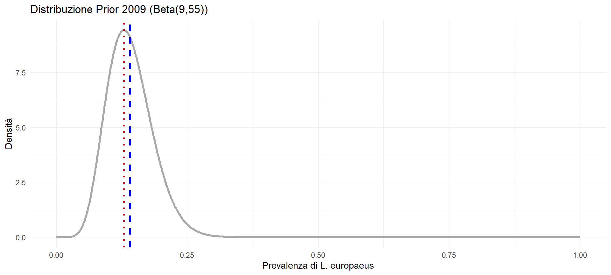
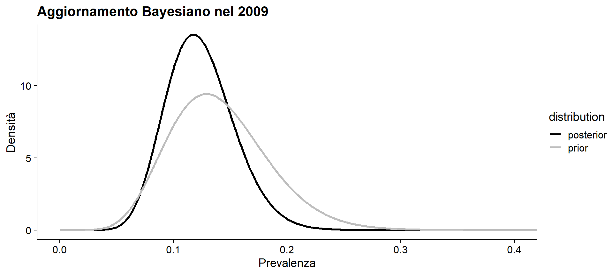
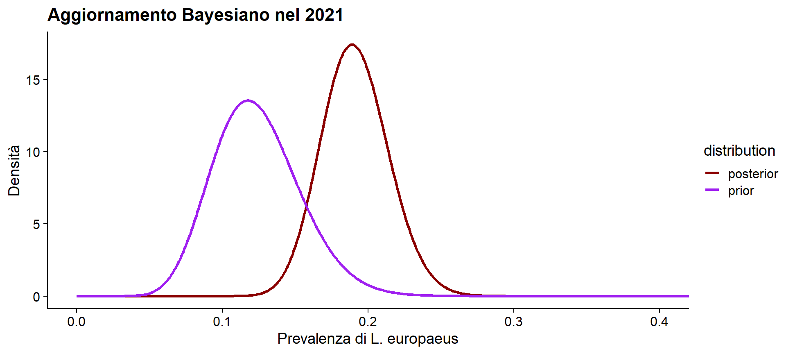
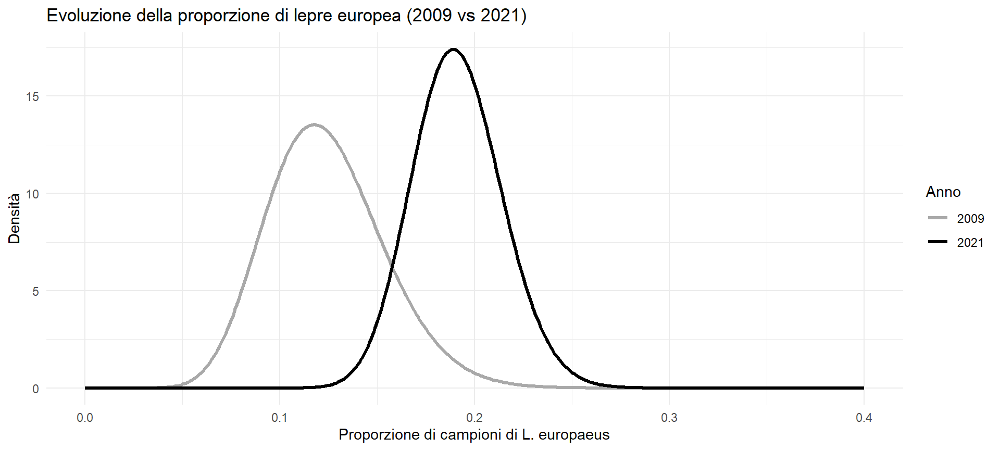

Analisi Bayesiana
Studio del cambiamento climatico sulle lepri alpine
Corso ECMA - Ecological Data Management and Analysis
2026-06-08
Introduzione al Modello in R
Nelle prossime slide vedremo come implementare in R il modello coniugato Beta-Binomiale descritto nel caso studio.
I pacchetti necessari: assicuratevi di aver installato e caricato le seguenti librerie prima di compilare la presentazione:
La Coniugata Beta-Binomiale
Perché usiamo proprio questo modello matematico?
I dati (Likelihood Binomiale): Il nostro test genetico sui pellet ha due soli risultati: è L. europaeus (insuccesso) o L. timidus (successo). La verosimiglianza per il conteggio di questi eventi è la distribuzione Binomiale.
Il Parametro (Prior Beta): Stiamo cercando \(\theta\), una proporzione. La distribuzione Beta è l’unica progettata per descrivere variabili continue strettamente comprese tra 0 e 1.
La Coniugazione: Quando combiniamo un Prior Beta e una Likelihood Binomiale, l’equazione di Bayes si risolve analiticamente. Il Posterior sarà sempre un’altra distribuzione Beta. Niente integrali complessi o simulazioni al computer!
Tip
L’intuizione matematica
Se la Prior è \(\text{Beta}(a, b)\), e sul campo osserviamo \(y\) lepri europee e \(n-y\) lepri variabili, il Posterior è semplicemente \(\text{Beta}(a+y, \, b+n-y)\).
I nuovi dati (osservazioni) si “sommano” letteralmente alla nostra conoscenza precedente
Altre Distribuzioni Coniugate Comuni
Oltre alla Beta-Binomiale, in ecologia si utilizzano spesso altre coppie di distribuzioni coniugate per mantenere i calcoli analitici e semplici:
- Gamma-Poisson (Dati di conteggio).
Usata per contare eventi nel tempo o nello spazio (es. numero di lupi avvistati in un mese, nidi in un ettaro).
Likelihood: Poisson | Prior: Gamma
- Normale-Normale (Stime di medie).
Usata per stimare valori continui (es. peso medio di una specie, temperatura), assumendo varianza nota.
Likelihood: Normale | Prior: Normale
- Dirichlet-Multinomiale (Categorie multiple).
L’estensione naturale della Beta-Binomiale. Utile quando le categorie sono \(K > 2\) (es. classificare campioni di DNA tra cervo, capriolo e camoscio).
Likelihood: Multinomiale | Prior: Dirichlet
L’Analisi del 2009
La Prior del 2009
Utilizziamo uno studio precedente (Scandura et al. 2008) come informazione a priori. La proporzione attesa è del 14% (\(\theta \approx 0.14\)), descritta da una distribuzione \(\text{Beta}(9, 55)\).
Tip
Nella statistica bayesiana basata sulla coniugata Beta-Binomiale, quando usiamo dati empirici passati per costruire la nostra Prior, i parametri della distribuzione Beta (\(\alpha\) e \(\beta\)) corrispondono letteralmente ai conteggi grezzi dello studio precedente.
Nello specifico dello studio di Scandura et al. (2008) in Valle d’Aosta:
- 9 (\(\alpha\)) è il numero di campioni storici identificati come Lepus europaeus (quello che nel modello consideriamo il “successo”).
- 55 (\(\beta\)) è il numero di campioni storici identificati come Lepus timidus (il nostro “insuccesso”).
Se sommiamo i due valori, otteniamo il numero totale di campioni analizzati in quello studio storico (\(9 + 55 = 64\) campioni totali).
# Creiamo il vettore di theta (prevalenza) da 0 a 1
d_2009 <- data.frame(
theta = seq(0, 1, by = 0.001),
density = dbeta(seq(0, 1, by = 0.001), 9, 55)
)
# Calcoliamo i parametri di posizione geometrica
n <- length(d_2009$density)
dx <- mean(diff(d_2009$theta))
y.unit <- sum(d_2009$density) * dx # Integrale (deve essere ~ 1)
dx <- dx / y.unit
x.mean <- sum(d_2009$density * d_2009$theta) * dx
x.mode <- d_2009$theta[which.max(d_2009$density)]Media a Priori (\(\mathbb{E}[\theta]\)): 0.141
Moda a Priori (Picco): 0.129
Visualizzare la Prior 2009
Ecco la distribuzione a priori con evidenziati i valori di sintesi (Media, Mediana, Moda).
ggplot(d_2009, aes(x = theta, y = density)) +
geom_line(color = "darkgrey", size = 1.2) +
geom_vline(xintercept = x.mean, color = "blue", linetype = "dashed", size = 1) +
geom_vline(xintercept = x.mode, color = "red", linetype = "dotted", size = 1) +
labs(title = "Distribuzione Prior 2009 (Beta(9,55))",
x = "Prevalenza di L. europaeus", y = "Densità") +
theme_minimal()
Calcolo delle Probabilità (AUC con Spline)
Possiamo calcolare la probabilità che la prevalenza sia inferiore a una determinata soglia usando l’integrazione di spline con il pacchetto MESS.
Area Totale sotto la curva: 1.
Per le leggi della probabilità, l’area totale sotto un’intera curva di densità deve essere sempre pari esattamente a 1 (cioè il 100%). Calcolarla serve come “sanity check” per dimostrare che la curva generata matematicamente è corretta e valida.
\(P(\theta < 0.14)\) (soglia attesa): 0.5196 (circa il 52%).
Data questa curva, quante probabilità abbiamo che la prevalenza della lepre europea sia inferiore al 14%?“.
Il codice”taglia” i dati isolando solo i valori inferiori a 0.14 (subset) e ne calcola l’area sottostante. Il risultato ci dice esattamente quant’è questa probabilità.
In altre parole: Basandoci esclusivamente sui dati storici di Scandura (la nostra curva \(\text{Beta}(9,55)\)), abbiamo una fiducia del 52% che la vera prevalenza (\(\theta\)) della lepre europea nell’intera popolazione sia inferiore a 0.14 (14%), e una fiducia del 48% che sia superiore. La probabilità è “spaccata a metà” proprio perché 0.14 è la media attesa (il centro di gravità) di quella distribuzione.
La Posterior del 2009 (PNGP Data)
Sul campo raccogliamo i campioni del 2009:
- \(y = 6\) (lepri europee) su \(n = 57\) campioni totali
- la Posterior coniugata diventa: \(\text{Beta}(a+y, \, b+n-y) \rightarrow \text{Beta}(15, 106)\)
Note
I parametri aggiornati del Posterior 2009 sono: \(\alpha = 15\) e \(\beta = 106\).
Prior vs Posterior (2009)
Grazie all’integrazione dei nuovi dati di campo del 2009, la nostra distribuzione si restringe (maggiore certezza) e si sposta leggermente a sinistra.
ggplot(d_post_2009, aes(x = theta, y = density, color = distribution)) +
geom_line(size = 1.2) +
scale_color_manual(values = c("prior" = "grey", "posterior" = "black")) +
# xlim(0, 0.4) +
coord_cartesian(xlim = c(0, 0.4)) +
labs(title = "Aggiornamento Bayesiano nel 2009",
x = "Prevalenza", y = "Densità") +
theme_cowplot()
2. La transizione al 2021
La nuova Prior del 2021
In un’analisi sequenziale, la Posterior del 2009 diventa la Prior del 2021!
Partiamo quindi con una \(\text{Beta}(15, 106)\) come base di conoscenza pregressa.
Tip
Logica Sequenziale: questo passaggio incarna la vera potenza del pensiero bayesiano: accumulare conoscenza in modo trasparente e matematicamente rigoroso.
I dati del 2021 e la posterior finale
Nel 2021, estraiamo il DNA di 172 campioni fecali (\(n = 172\)). Di questi, 41 appartengono alla lepre europea (\(y = 41\)).
La Posterior finale è:
\(\text{Beta}(15 + 41, \, 106 + 172 - 41) \rightarrow \text{Beta}(56, 237)\).
a_2021 <- 15; b_2021 <- 106
y_2021 <- 41; n_2021 <- 172
d_post_2021 <- data.frame(
theta = seq(0, 1, by = 0.001),
distribution = rep(c("prior", "posterior"), each = 1001),
density = c(dbeta(seq(0, 1, by = 0.001), a_2021, b_2021),
dbeta(seq(0, 1, by = 0.001), a_2021 + y_2021, b_2021 + n_2021 - y_2021))
)Grafico Prior vs Posterior (2021)
La massiccia mole di dati raccolti nel 2021 spinge la distribuzione verso valori di prevalenza decisamente più alti.
ggplot(d_post_2021, aes(x = theta, y = density, color = distribution)) +
geom_line(size = 1.2) +
scale_color_manual(values = c("prior" = "purple", "posterior" = "darkred")) +
coord_cartesian(xlim = c(0, 0.4)) +
labs(title = "Aggiornamento Bayesiano nel 2021",
x = "Prevalenza di L. europaeus", y = "Densità") +
theme_cowplot()
3. Risultati e Conclusioni
Confronto Finale: Posterior 2009 vs 2021
Mettiamo a confronto le distribuzioni a posteriori dei due anni per valutare l’impatto reale del cambiamento climatico.
Confronto grafico
ggplot(comparison_df) +
geom_line(aes(x = theta, y = density_2009, color = "2009"), size = 1.2) +
geom_line(aes(x = theta, y = density_2021, color = "2021"), size = 1.2) +
scale_color_manual(values = c("2009" = "darkgrey", "2021" = "black")) +
xlim(0, 0.4) +
labs(title = "Evoluzione della proporzione di lepre europea (2009 vs 2021)",
x = "Proporzione di campioni di L. europaeus", y = "Densità", color = "Anno") +
theme_minimal()
Credible Intervals (Intervalli di Credibilità 95%)
A differenza dell’intervallo di confidenza frequentista, l’Intervallo di Credibilità Bayesiano al 95% ci dice che c’è il 95% di probabilità che il parametro \(\theta\) sia compreso in questo intervallo.
Limite Inferiore (2.5%): 0.148.
Limite Superiore (97.5%): 0.237.
Important
Frequentista vs Bayesiano: Attenzione all’interpretazione!
Intervallo di Confidenza Frequentista (95%):
Assume che il parametro in natura sia fisso. Significa che se ripetessimo il campionamento 100 volte in scenari paralleli, 95 degli intervalli così calcolati conterrebbero il parametro vero. Non possiamo dire che c’è il 95% di probabilità che il parametro sia proprio in questo specifico intervallo calcolato oggi (la probabilità in realtà è o 0 o 1).
Intervallo di Credibilità Bayesiano (95%):
Tratta il parametro come variabile stocastica. Ci garantisce in modo diretto e intuitivo che, dati i nostri dati raccolti e la nostra conoscenza pregressa, c’è esattamente il 95% di probabilità che il parametro reale si trovi in questo preciso intervallo tra 0.148 e 0.237. È esattamente ciò che il nostro cervello si aspetta quando legge un intervallo statistico!
In Sintesi
Important
L’invasione in atto.
Nel 2021, la presenza della lepre europea ad alte quote si attesta stabilmente tra il 14.2% e il 23.9%. L’invasione dell’areale della lepre variabile è in pieno svolgimento.
Da ricordare:
La Prior non è soggettiva: è l’esplicitazione della conoscenza biologica pregressa.
L’analisi è dinamica: la Posterior di oggi diventa la Prior di domani.
Risultati robusti: l’approccio Bayesiano sequenziale ha permesso di quantificare l’espansione spaziale della lepre europea riducendo l’incertezza tipica dei piccoli campionamenti.

Analisi Bayesiana: Lepus timidus vs L. europaeus